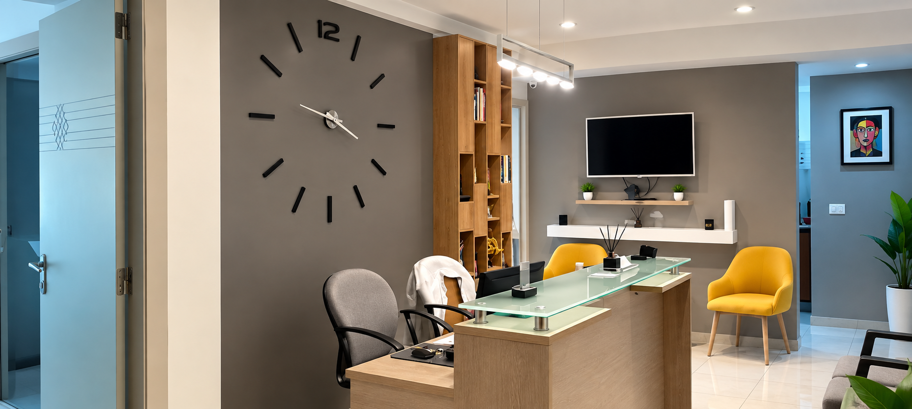
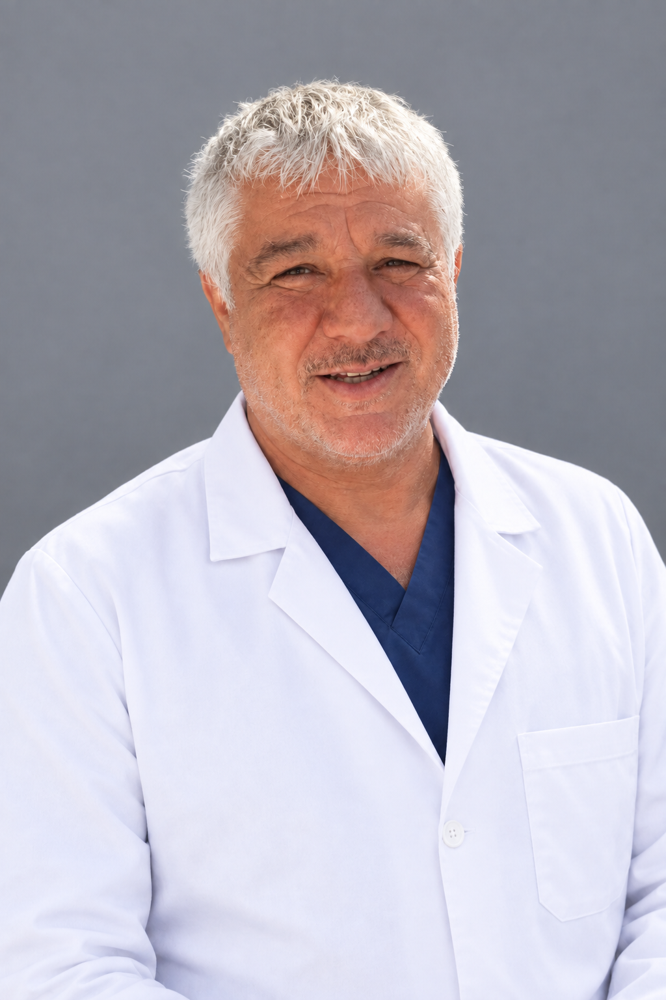

Cabinet du
Dr Sabri Maaoui
Cardiologie interventionnelle et rythmologie : une prise en charge cardiovasculaire rigoureuse, à l'écoute et adaptée à chaque patient.


Dr Sabri Maaoui
Le Dr Sabri Maaoui est cardiologue, ancien assistant hospitalo-universitaire et spécialiste en cardiologie interventionnelle. Titulaire d'un diplôme de rythmologie de l'Université René Descartes – Paris 5, il a construit son parcours autour d'une double exigence : la précision technique et l'attention portée à chaque patient.
Son cabinet propose un accompagnement cardiovasculaire complet, de l'échographie cardiaque au Holter rythmique (MAPA), en passant par l'épreuve d'effort, la programmation et la pose de pacemaker, ainsi que la coronarographie et l'angioplastie. Cette polyvalence lui permet d'assurer un suivi cohérent, du dépistage jusqu'à la prise en charge des pathologies cardiaques les plus complexes.
- Approche humaine et bienveillante
- Prise en charge individualisée
- Respect de la confidentialité
Le Cabinet
Un espace conçu pour votre confort et une prise en charge optimale.
Accueil personnalisé
Dès votre arrivée, vous serez accueilli dans un cadre serein pour une prise en charge fluide et rassurante.
Environnement médical moderne
Un espace propre, moderne et équipé pour assurer des consultations et des examens de qualité.
Suivi personnalisé
Un environnement confidentiel favorisant une relation médecin-patient basée sur la confiance et l'écoute.
Nos services
Une prise en charge complète pour la santé de votre cœur, du dépistage au traitement des pathologies cardiovasculaires les plus complexes.
Consultation cardiologique
Évaluation globale de votre santé cardiovasculaire lors d'un entretien et d'un examen clinique détaillés, dans une démarche d'écoute et de prévention.
Échographie cardiaque
Examen d'imagerie non invasif permettant de visualiser le cœur en mouvement pour établir un diagnostic précis et orienter la prise en charge.
Holter rythmique & MAPA
Enregistrement continu de l'activité cardiaque ou de la tension artérielle sur 24 heures pour détecter d'éventuelles anomalies du rythme ou de la pression.
Épreuve d'effort
Test réalisé sous surveillance médicale pour évaluer la réponse du cœur à l'effort et dépister une éventuelle insuffisance coronarienne.
Pose et suivi de pacemaker
Programmation, implantation et suivi régulier des stimulateurs cardiaques pour les patients souffrant de troubles du rythme.
Coronarographie & angioplastie
Exploration et traitement des artères coronaires en cardiologie interventionnelle, pour diagnostiquer et lever les obstructions vasculaires.
Pourquoi choisir le cabinet ?
Écoute et attention
Approche personnalisée
Suivi médical
Cadre professionnel
Vous avez des questions ?
Quelques réponses aux questions les plus posées par nos patients avant leur consultation.
Quand faut-il consulter un cardiologue ?
Il est recommandé de consulter en cas de douleurs thoraciques, d'essoufflement inhabituel, de palpitations, de fatigue persistante, ou dans le cadre d'un suivi préventif si vous présentez des facteurs de risque (hypertension, diabète, antécédents familiaux, tabac). Un bilan régulier est également conseillé après 40-50 ans.
Faut-il être à jeun pour une échographie cardiaque ?
Non, l'échographie cardiaque ne nécessite généralement pas d'être à jeun. Il est simplement conseillé de porter une tenue confortable et d'apporter vos examens antérieurs si vous en avez.
En quoi consiste une épreuve d'effort ?
L'épreuve d'effort consiste à faire du vélo ou du tapis roulant sous surveillance médicale (ECG, tension) afin d'évaluer la réponse du cœur à l'effort. L'examen est progressif et s'arrête dès l'apparition de signes nécessitant une pause.
Combien de temps dure un Holter rythmique ou une MAPA ?
Le Holter rythmique (enregistrement du rythme cardiaque) et la MAPA (mesure ambulatoire de la pression artérielle) sont généralement posés pour 24 heures, pendant lesquelles vous continuez vos activités habituelles avant de revenir restituer l'appareil.
La pose d'un pacemaker est-elle une intervention lourde ?
La pose d'un pacemaker est une intervention bien maîtrisée, réalisée sous anesthésie locale. Le Dr Maaoui assure ensuite un suivi et une programmation réguliers de l'appareil pour garantir son bon fonctionnement dans la durée.
Comment prendre rendez-vous avec le cabinet ?
Vous pouvez nous joindre par téléphone ou via WhatsApp aux horaires d'ouverture du cabinet. Nos coordonnées et notre adresse sont disponibles dans la section Contact ci-dessous.
Besoin d'une consultation ?
Le Dr Sabri Maaoui vous reçoit à Monastir pour une évaluation complète de votre santé cardiovasculaire. Appelez le cabinet ou contactez-nous sur WhatsApp pour convenir d'un rendez-vous.
Contact & Accès
Médecin
Dr Sabri Maaoui
Cardiologue
Adresse
Immeuble Monastir Médical – 1er étage
Horaires
Lundi - Vendredi : 8h00 – 18h00